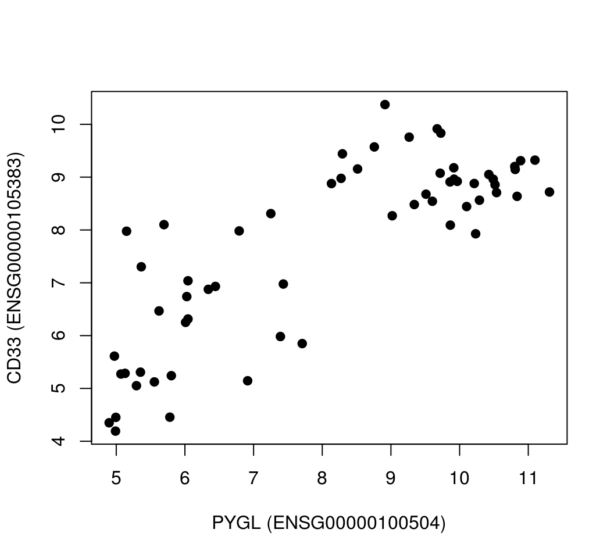
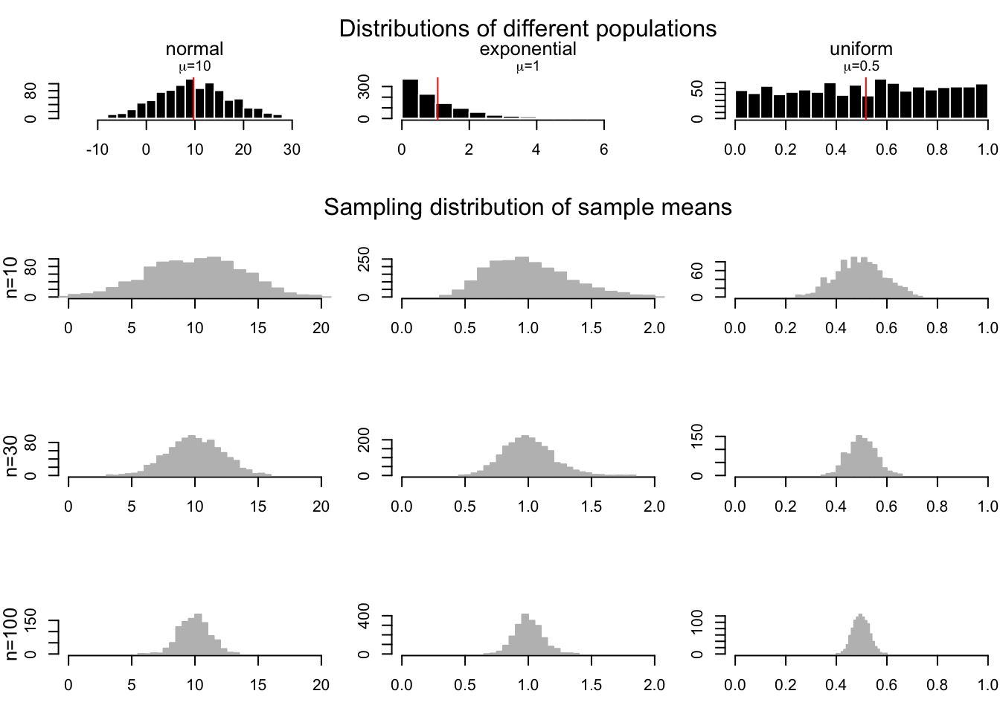
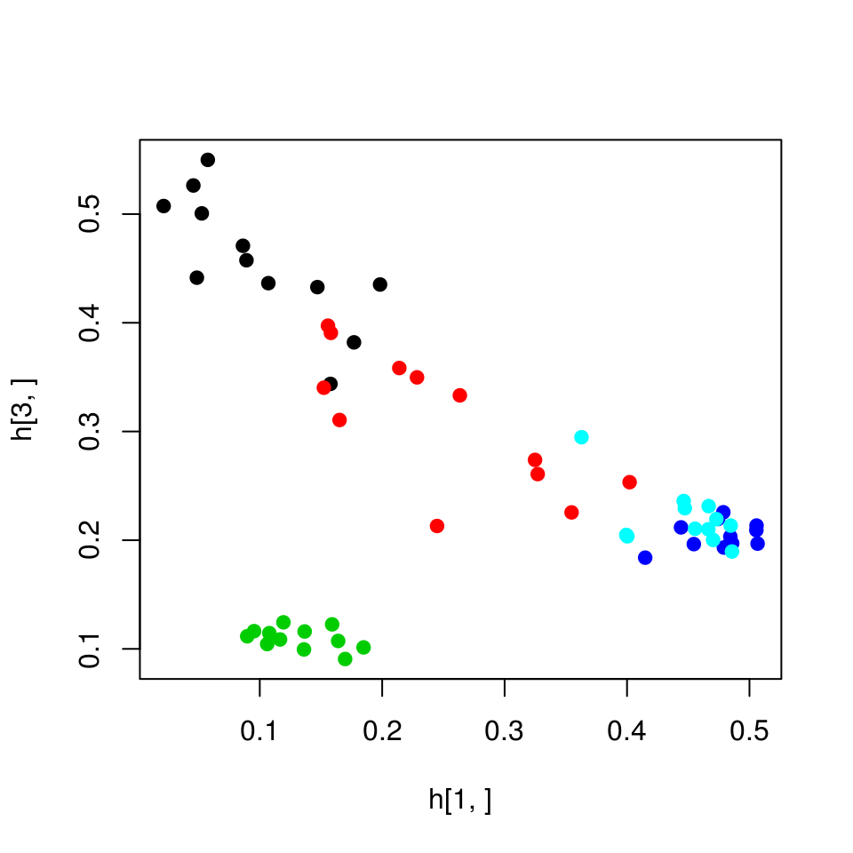
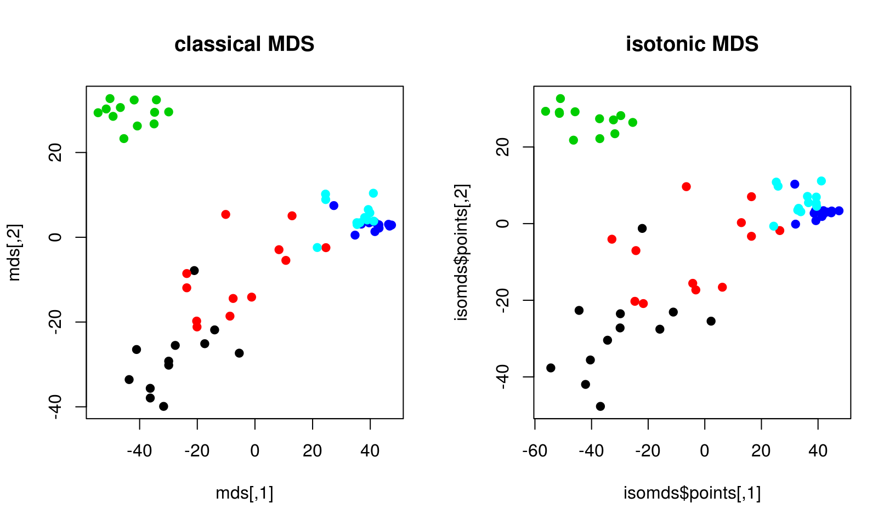
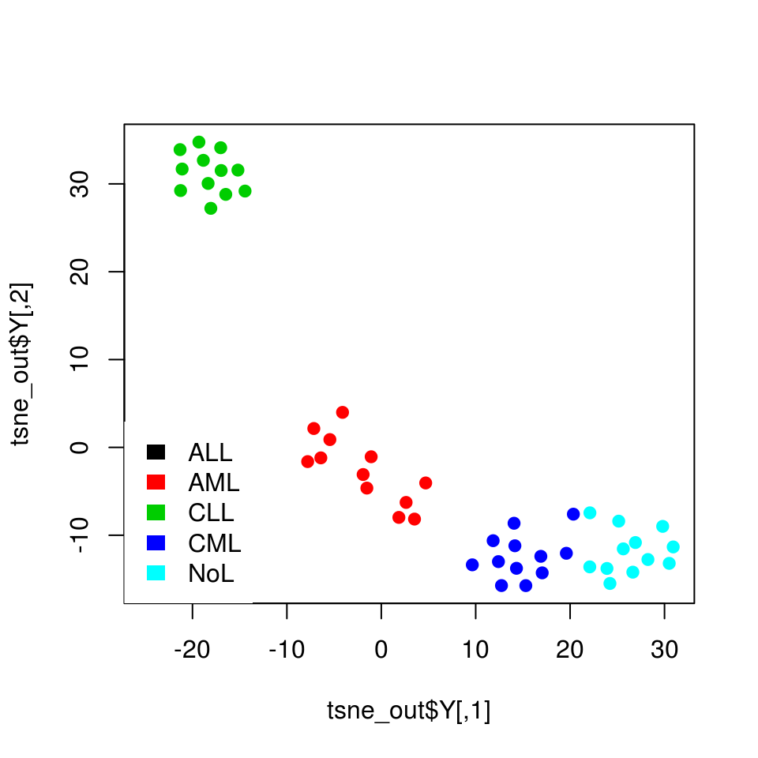

3.5 Dimensionality reduction techniques: visualizing complex data sets in 2D
In statistics, dimension reduction techniques are a set of processes for reducing the number of random variables by obtaining a set of principal variables. For example, in the context of a gene expression matrix accross different patient samples, this might mean getting a set of new variables that cover the variation in sets of genes. This way samples can be represented by a couple of principal variables instead of thousands of genes. This is useful for visualization, clustering and predictive modeling.
3.5.1 Principal component analysis
Principal component analysis (PCA) is maybe the most popular technique to examine high-dimensional data. There are multiple interpretations of how PCA reduces dimensionality. We will first focus on geometrical interpretation, where this operation can be interpreted as rotating the orignal dimensions of the data. For this, we go back to our example gene expression data set. In this example, we will represent our patients with expression profiles of just two genes, CD33 (ENSG00000105383) and PYGL (ENSG00000100504) genes. This way we can visualize them in a scatterplot.
plot(mat[rownames(mat)=="ENSG00000100504",],
mat[rownames(mat)=="ENSG00000105383",],pch=19,
ylab="CD33 (ENSG00000105383)",
xlab="PYGL (ENSG00000100504)") PCA rotates the original data space such that the axes of the new coordinate system point into the directions of highest variance of the data. The axes or new variables are termed principal components (PCs) and are ordered by variance: The first component, PC 1, represents the direction of the highest variance of the data. The direction of the second component, PC 2, represents the highest of the remaining variance orthogonal to the first component. This can be naturally extended to obtain the required number of components which together span a component space covering the desired amount of variance. In our toy example with only two genes, the principal componets are drawn over the original scatter plot and in the next plot we show the new coordinate system based on the pricinpal components. We will calculate the PCA with the princomp() function, this function returns the new coordinates as well. These new coordinates are simply a projection of data over the new coordinates. We will decorate the scatter plots with eigenvectors showing the direction of greatest variation. Then, we will plot the new coordinates. These are automatically calculated by princomp() function. Notice that we are using the scale() function when plotting coordinates and also before calculating PCA. This function centers the data, meaning substracts the mean of the each column vector from the elements in the vector. This essentially gives the columns a zero mean. It also divides the data by the standard deviation of the centered columns. These two operations helps bring the data to a common scale which is important for PCA not to be affected by different scales in the data.
par(mfrow=c(1,2))
# create the subset of the data with two genes only
# notice that we transpose the matrix so samples are
# on the columns
sub.mat=t(mat[rownames(mat) %in% c("ENSG00000100504","ENSG00000105383"),])
# ploting our genes of interest as scatter plots
plot(scale(mat[rownames(mat)=="ENSG00000100504",]),
scale(mat[rownames(mat)=="ENSG00000105383",]),
pch=19,
ylab="CD33 (ENSG00000105383)",
xlab="PYGL (ENSG00000100504)",
col=annotation_col$LeukemiaType,
xlim=c(-2,2),ylim=c(-2,2))
# create the legend for the Leukemia types
legend("bottomright",
legend=unique(annotation_col$LeukemiaType),
fill =palette("default"),
border=NA,box.col=NA)
# calculate the PCA only for our genes and all the samples
pr=princomp(scale(sub.mat))
# plot the direction of eigenvectors
# pr$loadings returned by princomp has the eigenvectors
arrows(x0=0, y0=0, x1 = pr$loadings[1,1],
y1 = pr$loadings[2,1],col="pink",lwd=3)
arrows(x0=0, y0=0, x1 = pr$loadings[1,2],
y1 = pr$loadings[2,2],col="gray",lwd=3)
# plot the samples in the new coordinate system
plot(-pr$scores,pch=19,
col=annotation_col$LeukemiaType,
ylim=c(-2,2),xlim=c(-4,4))
# plot the new coordinate basis vectors
arrows(x0=0, y0=0, x1 =-2,
y1 = 0,col="pink",lwd=3)
arrows(x0=0, y0=0, x1 = 0,
y1 = -1,col="gray",lwd=3)FIGURE 3.21: Geometric interpretation of PCA finding eigenvectors that point to direction of highest variance. Eigenvectors can be used as a new coordinate system.
As you can see, the new coordinate system is useful by itself.The X-axis which represents the first component separates the data along the lympoblastic and myeloid leukemias.
PCA in this case is obtained by calculating eigenvectors of the covariance matrix via an operation called eigen decomposition. Covariance matrix is obtained by covariance of pairwise variables of our expression matrix, which is simply \({ \operatorname{cov} (X,Y)={\frac {1}{n}}\sum _{i=1}^{n}(x_{i}-\mu_X)(y_{i}-\mu_Y)}\), where \(X\) and \(Y\) expression values of genes in a sample in our example. This is a measure of how things vary together, if high expressed genes in sample A are also highly expressed in sample B and lowly expressed in sample A are also lowly expressed in sample B, then sample A and B will have positive covariance. If the opposite is true then they will have negative covariance. This quantity is related to correlation and in fact correlation is standardized covariance. Covariance of variables can be obtained with cov() function, and eigen decomposition of such a matrix will produce a set of ortahogonal vectors that span the directions of highest variation. In 2D, you can think of this operation as rotating two perpendicular lines together until they point to the directions where most of the variation in the data lies on, similar to the figure 3.21. An important intuition is that, after the rotation prescribed by eigenvectors is complete the covariance between variables in this rotated dataset will be zero. There is a proper mathematical relationship between covariances of the rotated dataset and the original dataset. That’s why operating on covariance matrix is related to the rotation of the original dataset.
cov.mat=cov(sub.mat) # calculate covariance matrix
cov.mat
eigen(cov.mat) # obtain eigen decomposition for eigen values and vectorsEigenvectors and eigenvalues of the covariance matrix indicates the direction and the magnitute of variation of the data. In our visual example the eigenvectors are so-called principal components. The eigenvector indicates the direction and the eigen values indicate the variation in that direction. Eigenvectors and values exist in pairs: every eigenvector has a corresponding eigenvalue and the eigenvectors are linearly independent from each other, this means they are orthogonal or uncorrelated in the our working example above. The eigenvectors are ranked by their corresponding eigen value, the higher the eigen value the more important the eigenvector is, because it explains more of the variation compared to the other eigenvectors. This feature of PCA makes the dimension reduction possible. We can sometimes display data sets that have many variables only in 2D or 3D because the these top eigenvectors are sometimes enough to capture most of variation in the data.
3.5.1.1 Singular value decomposition and principal component analysis
A more common way to calculate PCA is through something called singular value decomposition (SVD). This results in another interpretation of PCA, which is called “latent factor” or “latent component” interpretation. In a moment, it will be more clear what we mean by “latent factors”. SVD is a matrix factorization or decomposition algorithm that decomposes an input matrix,\(X\), to three matrices as follows: \(\displaystyle \mathrm{X} = USV^T\). In essence many matrices can be decomposed as a product of multiple matrices and we will come to other techniques later in this chapter. Singular Value Decomposition is shown in figure 3.22. \(U\) is the matrix with eigenarrays on the columns and this has the same dimensions as the input matrix, you might see elsewhere the columns are named as eigenassays. \(S\) is the matrix that contain the singular values on the diagonal. The singular values are also known as eigenvalues and their square is proportional to explained variation by each eigenvector. Finally, the matrix \(V^T\) contains the eigenvectors on its rows. It is interpretation is still the same. Geometrically, eigenvectors point to the direction of highest variance in the data. They are uncorrolated or geometrically orthogonal to each other. These interpretations are identical to the ones we made before. The slight difference is that the decomposition seem to output \(V^T\) which is just the transpose of the matrix \(V\). However, the SVD algorithms in R usually return the matrix \(V\). If you want the eigenvectors, you either simply use the columns of matrix \(V\) or rows of \(V^T\).
FIGURE 3.22: Singular Value Decomposition (SVD) explained in a diagram.
One thing that is new in the figure 3.22 is the concept of eigenarrays. The eigenarrays or sometimes called eigenassays reprensent the sample space and can be used to plot the relationship between samples rather than genes. In this way, SVD offers additional information than the PCA using the covariance matrix. It offers us a way to summarize both genes and samples. As we can project the gene expression profiles over the top two eigengenes and get a 2D representation of genes, but with SVD we can also project the samples over the the top two eigenarrays and get a representation of samples in 2D scatterplot. Eigenvector could represent independent expression programs across samples, such as cell-cycle if we had time-based expression profiles. However, there is no guarantee that each eigenvector will be biologically meaningful. Similarly each eigenarray represent samples with specific expression characteristics. For example, the samples that have a particular pathway activated might be corrolated to an eigenarray returned by SVD.
Previously, in order to map samples to the reduced 2D space we had to transpose the genes-by-samples matrix when using princomp() function. We will now first use SVD on genes-by-samples matrix to get eigenarrays and use that to plot samples on the reduced dimensions. We will project the columns in our original expression data on eigenarrays and use the first two dimensions in the scatter plot. If you look at the code you will see that for the projection we use \(U^T X\) operation, which is just \(V^T\) if you follow the linear algebra. We will also perform the PCA this time with prcomp() function on the transposed genes-by-samples matrix to get a similar information, and plot the samples on the reduced coordinates.
par(mfrow=c(1,2))
d=svd(scale(mat)) # apply SVD
assays=t(d$u) %*% scale(mat) # projection on eigenassays
plot(assays[1,],assays[2,],pch=19,
col=annotation_col$LeukemiaType)
#plot(d$v[,1],d$v[,2],pch=19,
# col=annotation_col$LeukemiaType)
pr=prcomp(t(mat),center=TRUE,scale=TRUE) # apply PCA on transposed matrix
# plot new coordinates from PCA, projections on eigenvectors
# since the matrix is transposed eigenvectors represent
plot(pr$x[,1],pr$x[,2],col=annotation_col$LeukemiaType)FIGURE 3.23: SVD on matrix and its transpose
As you can see in the figure 3.23, the two approaches yield separation of samples, although they are slightly different. The difference comes from the centering and scaling. In the first case, we scale and center columns and the second case we scale and center rows since the matrix is transposed. If we do not do any scaling or centering we would get identical plots.
3.5.1.1.1 Eigenvectors as latent factors/variables
Finally, we can introduce the latent factor interpretation of PCA via SVD. As we have already mentioned eigenvectors can also be interpreted as expression programs that are shared by several genes such as cell cycle expression program when measuring gene expression accross samples taken in different time points. In this intrepretation, linear combination of expression programs makes up the expression profile of the genes. Linear combination simply means multiplying the expression program with a weight and adding them up. Our \(USV^T\) matrix multiplication can be rearranged to yield such an understanding, we can multiply eigenarrays \(U\) with the diagonal eigenvalues \(S\), to produce a m-by-n weights matrix called \(W\), so \(W=US\) and we can re-write the equation as just weights by eigenvectors matrix, \(X=WV^T\) as shown in figure 3.24.
FIGURE 3.24: Singular Value Decomposition (SVD) reorgonized as multiplication of m-by-n weights matrix and eigenvectors

FIGURE 3.25: Gene expression of a gene can be thought as linear combination of eigenvectors.
However, SVD does not care about biology. The eigenvectors are just obtained from the data with constraints of ortagonality and the direction of variation. There are examples of eigenvectors representing real expression programs but that does not mean eigenvectors will always be biologically meaningful. Sometimes combination of them might make more sense in biology than single eigenvectors. This is also the same for the other matrix factorization techniques we describe below.
3.5.2 Other dimension reduction techniques using other matrix factorization methods
We must mention a few other techniques that are similar to SVD in spirit. Remember we mentioned that every matrix can be decomposed to other matrices where matrix multiplication operations reconstruct the original matrix. In the case of SVD/PCA, the constraint is that eigenvectors/arrays are ortogonal, however there are other decomposition algorithms with other constraints.
3.5.2.1 Independent component analysis (ICA)
We will first start with independent component analysis (ICA) which is an extension of PCA. ICA algorithm decomposes a given matrix \(X\) as follows: \(X=SA\). The rows of \(A\) could be interpreted similar to the eigengenes and columns of \(S\) could be interpreted as eigenarrays, these components are sometimes called metagenes and metasamples in the literature. Traditionally, \(S\) is called source matrix and \(A\) is called mixing matrix. ICA is developed for a problem called “blind-source separation”. In this problem, multiple microphones record sound from multiple instruments, and the task is disentagle sounds from original instruments since each microphone is recording a combination of sounds. In this respect, the matrix \(S\) contains the original signals (sounds from different instruments) and their linear combinations identified by the weights in \(A\), and the product of \(A\) and \(S\) makes up the matrix \(X\), which is the observed signal from different microphones. With this interpretation in mind, if the interest is strictly expression patterns similar that represent the hidden expression programs we see that genes-by-samples matrix is transposed to a samples-by-genes matrix, so that the columns of \(S\) represent these expression patterns , here refered to as “metagenes”, hopefully representing distinct expression programs (Figure 3.26 ).
FIGURE 3.26: Independent Component Analysis (ICA)
ICA requires that the columns of \(S\) matrix, the “metagenes” in our example above to be statistical independent. This is a stronger constraint than uncorrelatedness. In this case, there should be no relationship between non-linear transformation of the data either. There are different ways of ensuring this statistical indepedence and this is the main constraint when finding the optimal \(A\) and \(S\) matrices. The various ICA algorithms use different proxies for statistical independence, and the definition of that proxy is the main difference between many ICA algorithms. The algorithm we are going to use requires that metagenes or sources in the \(S\) matrix are non-gaussian as possible. Non-gaussianity is shown to be related to statistical independence [REF]. Below, we are using fastICA::fastICA() function to extract 2 components and plot the rows of matrix \(A\) which represents metagenes. This way, we can visualize samples in a 2D plot. If we wanted to plot the relationship between genes we would use the the columns of matrix \(S\).
library(fastICA)
ica.res=fastICA(t(mat),n.comp=2) # apply ICA
# plot reduced dimensions
plot(ica.res$S[,1],ica.res$S[,2],col=annotation_col$LeukemiaType)
3.5.2.2 Non-negative matrix factorization (NMF)
Non-negative matrix factorization algorithms are series of algorithms that aim to decompose the matrix \(X\) into the product or matrices \(W\) and \(H\), \(X=WH\) (Figure 3.27). The constraint is that \(W\) and \(H\) must contain non-negative values, so must \(X\). This is well suited for data sets that can not contain negative values such as gene expression. This also implies addivity of components, in our example expression of a gene across samples are addition of multiple metagenes. Unlike ICA and SVD/PCA, the metagenes can never be combined in subtractive way. In this sense, expression programs potentially captured by metagenes are combined additively.

FIGURE 3.27: Non-negative matrix factorization
The algorithms that compute NMF tries to minimize the cost function \(D(X,WH)\), which is the distance between \(X\) and \(WH\). The early algorithms just use the euclidean distance which translates to \(\sum(X-WH)^2\), this is also known as Frobenious norm and you will see in the literature it is written as :\(\||V-WH||_{F}\) However this is not the only distance metric, other distance metrics are also used in NMF algorithms. In addition, there could be other parameters to optimize that relates to sparseness of the \(W\) and \(H\) matrices. With sparse \(W\) and \(H\), each entry in the \(X\) matrix is expressed as the sum of a small number of components. This makes the interpretation easier, if the weights are 0 than there is not contribution from the corresponding factors.
Below, we are plotting the values of metagenes (rows of \(H\)) for component 1 and 3. In this context, these values can also be interpreted as relationship between samples. If we wanted to plot the relationship between genes we would plot the columns of \(W\) matrix.
library(NMF)
res=nmf(mat,rank=3,seed=123) # nmf with 3 components/factors
w <- basis(res) # get W
h <- coef(res) # get H
# plot 1st factor against 3rd factor
plot(h[1,],h[3,],col=annotation_col$LeukemiaType,pch=19)
We should add the note that due to random starting points of the optimization algorithm, NMF is usually run multiple times and a consensus clustering approach is used when clustering samples. This simply means that samples are clustered together if they cluster together in multiple runs of the NMF. The NMF package we used above has built-in ways to achieve this. In addition, NMF is a family of algorithms the choice of cost function to optimize the difference between \(X\) and \(WH\) and the methods used for optimization creates multiple variants of NMF. The “method” parameter in the above nmf() function controls the which algorithm for NMF.
3.5.2.3 chosing the number of components and ranking components in importance
In both ICA and NMF, there is no well-defined way to rank components or to select the number of components. There are couple of approaches that might suit to both ICA and NMF for ranking components. One can use the norms of columns/rows in mixing matrices. This could simply mean take the sum of absolute values in mixing matrices. In our examples above, For our ICA example above, ICA we would take the sum of the absolute values of the rows of \(A\) since we transposed the input matrix \(X\) before ICA. And for the NMF, we would use the columns of \(W\). These ideas assume that the larger coefficients in the weight or mixing matrices indicate more important components.
For selecting the optimal number of components, NMF package provides different strategies. One way is to calculate RSS for each \(k\), number of components, and take the \(k\) where the RSS curve starts to stabilize.However, these strategies require that you run the algorithm with multiple possible component numbers. nmf function will run these automatically when the rank argument is a vector of numbers. For ICA there is no straightforward way to choose the right number of components, a common strategy is to start with as many components as variables and try to rank them by their usefullness.
Want to know more ?
NMF package vignette has extensive information on how to run NMF to get stable resuts and getting an estimate of components https://cran.r-project.org/web/packages/NMF/vignettes/NMF-vignette.pdf
3.5.3 Multi-dimensional scaling
MDS is a set of data analysis techniques that display the structure of distance data in a high dimensional space into a lower dimensional space without much loss of information. The overall goal of MDS is to faithfully represent these distances with the lowest possible dimensions. So called “classical multi-dimensional scaling” algorithm, tries to minimize the following function:
\({\displaystyle Stress_{D}(z_{1},z_{2},...,z_{N})={\Biggl (}{\frac {\sum _{i,j}{\bigl (}d_{ij}-\|z_{i}-z_{j}\|{\bigr )}^{2}}{\sum _{i,j}d_{ij}^{2}}}{\Biggr )}^{1/2}}\)
Here the function compares the new data points on lower dimension \((z_{1},z_{2},...,z_{N})\) to the input distances between data points or distance between samples in our gene expression example. It turns out, this problem can be efficiently solved with SVD/PCA on the scaled distance matrix, the projection on eigenvectors will be the most optimal solution for the equation above. Therefore, classical MDS is sometimes called Principal Coordinates Analysis in the litereuature. However, later variants improve on classical MDS this by using this as a starting point and optimize a slightly different cost function that again measures how well the low-dimensional distances correspond to high-dimensional distances. This variant is called non-metric MDS and due to the nature of the cost function, it assumes a less stringent relationship between the low-dimensional distances $|z_{i}-z_{j}| and input distances \(d_{ij}\). Formally, this procedure tries to optimize the following function.
\({\displaystyle Stress_{D}(z_{1},z_{2},...,z_{N})={\Biggl (}{\frac {\sum _{i,j}{\bigl (}\|z_{i}-z_{j}\|-\theta(d_{ij}){\bigr )}^{2}}{\sum _{i,j}\|z_{i}-z_{j}\|^{2}}}{\Biggr )}^{1/2}}\)
The core of a non-metric MDS algorithm is a twofold optimization process. First the optimal monotonic transformation of the distances has to be found, this is shown in the above formula as \(\theta(d_{ij})\). Secondly, the points on a low dimension configuration have to be optimally arranged, so that their distances match the scaled distances as closely as possible. This two steps are repeated until some convergence criteria is reached. This usually means that the cost function does not improve much after certain number of iterations. The basic steps in a non-metric MDS algorithm are: 1. Find a random low dimensional configuration of points, or in the variant we will be using below we start with the configuration returned by classical MDS 2. Calculate the distances between the points in the low dimension $|z_{i}-z_{j}|, \(z_{i}\) and \(z_{j}\) are vector of positions for sample \(i\) and \(j\). 3. Find the optimal monotonic transformation of the input distance, \({\textstyle \theta(d_{ij})}\), to approximate input distances to low-dimensional distances. This is achieved by isotonic regression, where a monotonically increasing free-form function is fit. This step practically ensures that ranking of low-dimensional distances are similar to rankings of input distances. 4. Minimize the stress function by re-configuring low-dimensional space and keeping \(\theta\) function constant. 5. repeat from step 2 until convergence.
We will now demonstrate both classical MDS and Kruskal’s isometric MDS.
mds=cmdscale(dist(t(mat)))
isomds=MASS::isoMDS(dist(t(mat)))## initial value 15.907414
## final value 13.462986
## converged# plot the patients in the 2D space
par(mfrow=c(1,2))
plot(mds,pch=19,col=annotation_col$LeukemiaType,
main="classical MDS")
plot(isomds$points,pch=19,col=annotation_col$LeukemiaType,
main="isotonic MDS") In this example, there is not much difference between isotonic MDS and classical MDS. However, there might be cases where different MDS methods provides visiable changes in the scatter plots.
3.5.4 t-Distributed Stochastic Neighbor Embedding (t-SNE)
t-SNE maps the distances in high-dimensional space to lower dimensions and it is similar to MDS method in this respect. But the benefit of this particular method is that it tries to preserve the local structure of the data so the distances and grouping of the points we observe in a lower dimensions such as a 2D scatter plot is as close as possible to the distances we observe in the high-dimensional space. As with other dimension reduction methods, you can choose how many lower dimensions you need. The main difference of t-SNE is that it tries to preserve the local structure of the data. This kind of local structure embedding is missing in the MDS algorithm which also has a similar goal. MDS tries to optimize the distances as a whole, whereas t-SNE optimizes the distances with the local structure in mind. This is defined by the “perplexity” parameter in the arguments. This parameter controls how much the local structure influences the distance calculation. The lower the value the more the local structure is take into account. Similar to MDS, the process is an optimization algorithm. Here, we also try to minimize the divergence between observed distances and lower dimension distances. However, in the case of t-SNE, the observed distances and lower dimensional distances are transformed using a probabilistic framework with their local variance in mind.
From here on, we will provide a bit more detail on how the algorithm works in case conceptual description above is too shallow. In t-SNE the euclidiean distances between data points are transformed into a conditional similarity between points. This is done by assuming a normal distribution on each data point with a variance calculated ultimately by the use of “perplexity” parameter. The perplexity paramater is, in a sense, a guess about the number of the closest neighbors each point has. Setting it to higher values gives more weight to global structure. Given \(d_{ij}\) is the euclidean distance between point \(i\) and \(j\), the similarity score \(p_{ij}\) is calculated as shown below.
\(p_{j | i} = \frac{\exp(-\|d_{ij}\|^2 / 2 σ_i^2)}{∑_{k \neq i} \exp(-\|d_{ik}\|^2 / 2 σ_i^2)}\)
This distance is symmetrized by incorparating $p_{i | j} as shown below.
\(p_{i j}=\frac{p_{j|i} + p_{i|j}}{2n}\)
For the distances in the reduced dimension, we use t-distribution with one degree of freedom. In the formula below, \(| y_i-y_j\|^2\) is euclidean distance between points \(i\) and \(j\) in the reduced dimensions.
\[ q_{i j} = \frac{(1+ \| y_i-y_j\|^2)^{-1}}{(∑_{k \neq l} 1+ \| y_k-y_l\|^2)^{-1} } \]
As most of the algorithms we have seen in this section, t-SNE is an optimization process in essence. In every iteration the points along lower dimensions are re-arranged to minimize the formulated difference between the the observed joint probabilities (\(p_{i j}\)) and low-dimensional joint probabilities (\(q_{i j}\)). Here we are trying to compare probability distributions. In this case, this is done using a method called Kullback-Leibler divergence, or KL-divergence. In the formula below, since the \(p_{i j}\) is pre-defined using original distances, only way to optimize is to play with \(q_{i j}\)) because it depends on the configuration of points in the lower dimensional space. This configuration is optimized to minimize the KL-divergence between \(p_{i j}\) and \(q_{i j}\).
\[ KL(P||Q) = \sum_{i, j} p_{ij} \, \log \frac{p_{ij}}{q_{ij}}. \] Strictly speaking, KL-divergence measures how well the distribution \(P\) which is observed using the original data points can be aproximated by distribution \(Q\), which is modeled using points on the lower dimension. If the distributions are identical KL-divergence would be 0. Naturally, the more divergent the distributions are the higher the KL-divergence will be.
We will now show how to use t-SNE on our gene expression data set. We are setting the random seed because again t-SNE optimization algorithm have random starting points and this might create non-identical results in every run. After calculating the t-SNE lower dimension embeddings we will plot the points in a 2D scatter plot.
library("Rtsne")
set.seed(42) # Set a seed if you want reproducible results
tsne_out <- Rtsne(t(mat),perplexity = 10) # Run TSNE
#image(t(as.matrix(dist(tsne_out$Y))))
# Show the objects in the 2D tsne representation
plot(tsne_out$Y,col=annotation_col$LeukemiaType,
pch=19)
# create the legend for the Leukemia types
legend("bottomleft",
legend=unique(annotation_col$LeukemiaType),
fill =palette("default"),
border=NA,box.col=NA) As you might have noticed, we set again a random seed with set.seed() function. The optimization algorithm starts with random configuration of points in the lower dimension space, and each iteration it tries to improve on the previous lower dimension confugration, that is why starting points can result in different final outcomes.
Want to know more ?
- How perplexity effects t-sne, interactive examples https://distill.pub/2016/misread-tsne/
- more on perplexity: https://blog.paperspace.com/dimension-reduction-with-t-sne/
- Intro to t-SNE https://www.oreilly.com/learning/an-illustrated-introduction-to-the-t-sne-algorithm